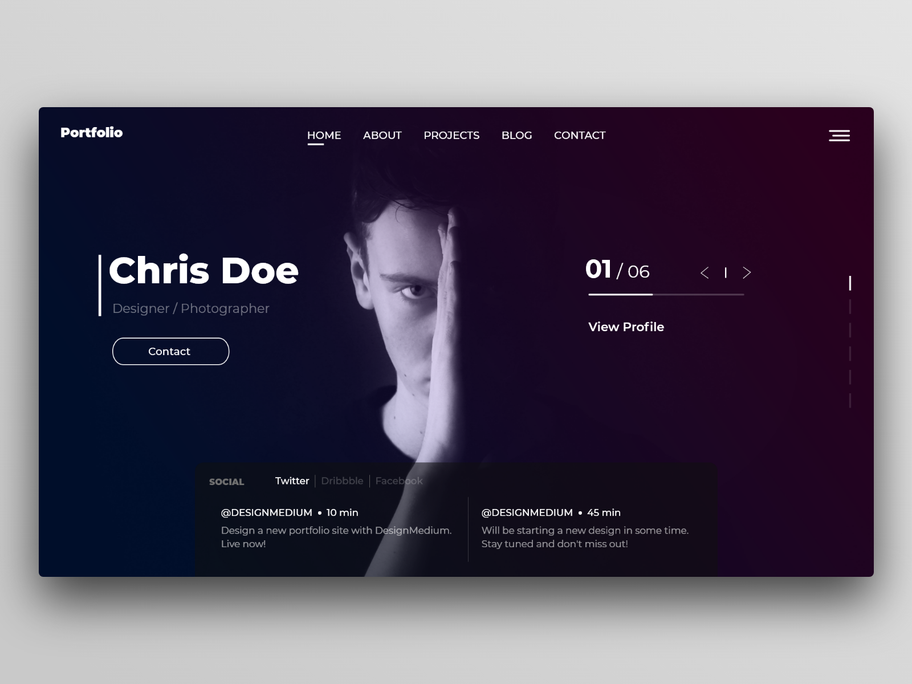

Become a folkter
Patience
Whether you're stumped on integrating a client's feedback, frustrated with the pace of your design career, patience is a skill you'll need.
Discipline
It’s important to manage both your work ethic and the discipline of furthering your knowledge and skills. Design blogs, online classes, and meetups will help you keep up with changes in the industry.
Communication
People skills are as important as pixel skills. Explaining your vision for a project in a way that non-designers understand is essential. Stakeholders can include anyone from the marketing department to the founder, and you need to be able to communicate what you're designing and how it will meet the project’s goals.
Self-awareness
Knowing your limitations goes a long way. How many of us have claimed expertise with software we actually know little about? Or claimed to be an SEO expert, or fluent in a dozen programming languages when we’re not? Some say fake it until you make it. But if you're faking it, chances are you'll get caught.Studio
